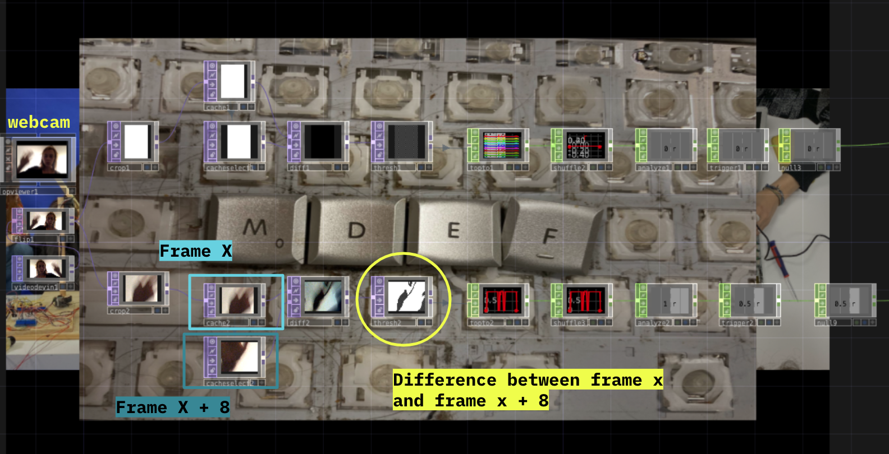

For this assignment, we were instructed to document the two week Tech Beyond the Myth course in a creative manner. The guidelines were quite open to our interpretation, but the goal was for us to move out of our comfort zone, and do something creatively innovative. We could explore new ways of capturing, collecting or displaying media, whether they be photos, videos or anything else we could think of.
I decided that I would focus on the way I would display my documentation. My methods of capturing photos remained mostly the same; I was just conscious to take more of them throughout the course. The creative add-on I chose to introduce was an real-time interactive image carousel I made in TouchDesigner. With the webcam turned on, I could move my hand right to go to the next image, or move my hand left to go back to the previous one.
video in 150% speed showing how the project works.
This project is very accessible because it doesn't require any motion capturing sensors like a kinect or leapmotion. It operates perfectly with a simple webcam and a somewhat well-lit environment. I made it in such a way that it didn't need to detect body joint data but rather variation in pixels through an 8-bit cache system. This means that the project detects any movement within a specific area of the video thanks to contrast in the pixels detected every 8 frames. The only down side to this is that when there is a lack of contrast (like white hand + white background or black hand + black background) then it becomes a bit harder for the system to work.

Project structure screenshot
When it came to filtering through my photos, I realised that I had not optimized the program for varying aspect ratios. The only aspect ratio that looked good was 16:9 (the same as the final output) and anything else had to be stretched, rotated or be surrounded by excess blank space. This meant that I couldn't select any pictures taken vertically.
By making this kind of project, I created a new way of telling a story to people. It could also be implemented in other ways, whether it be an interactive way of exhibiting a portfolio, showcasing different products to someone, or displaying a collective body of work. As I began to think of the different outputs for the project, I also wondered how I could play around with it. Let's just say there was not only creative documentation, but also creative experimentation.
experimenting the different ways i could trigger the movement
Since this course is very much focused on being "open-source", you can download the project folder by clicking here. You will need to install TouchDesigner in order to view the project, but it is free for personal use.